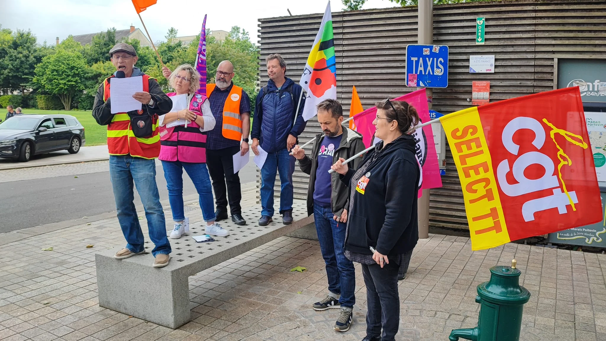
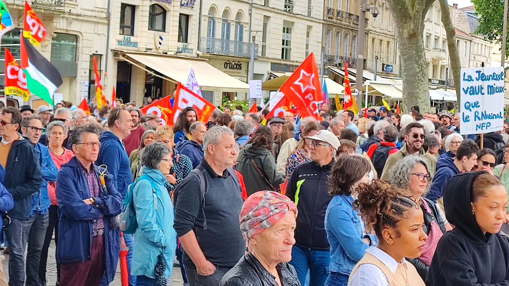
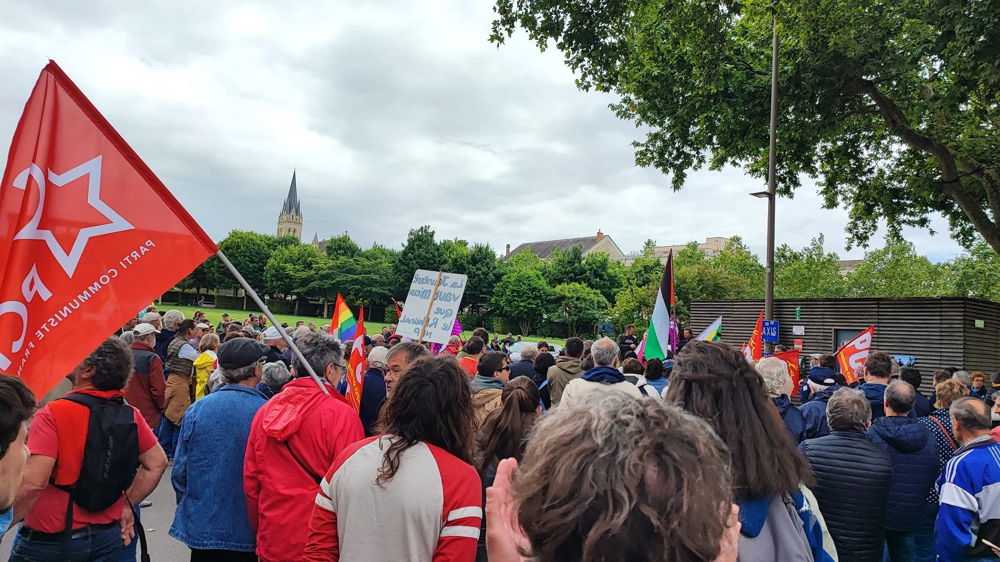
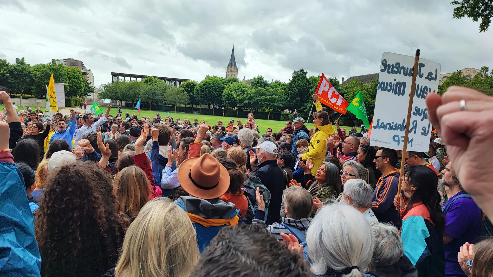
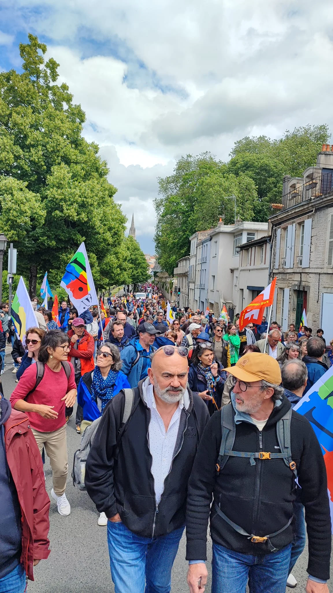
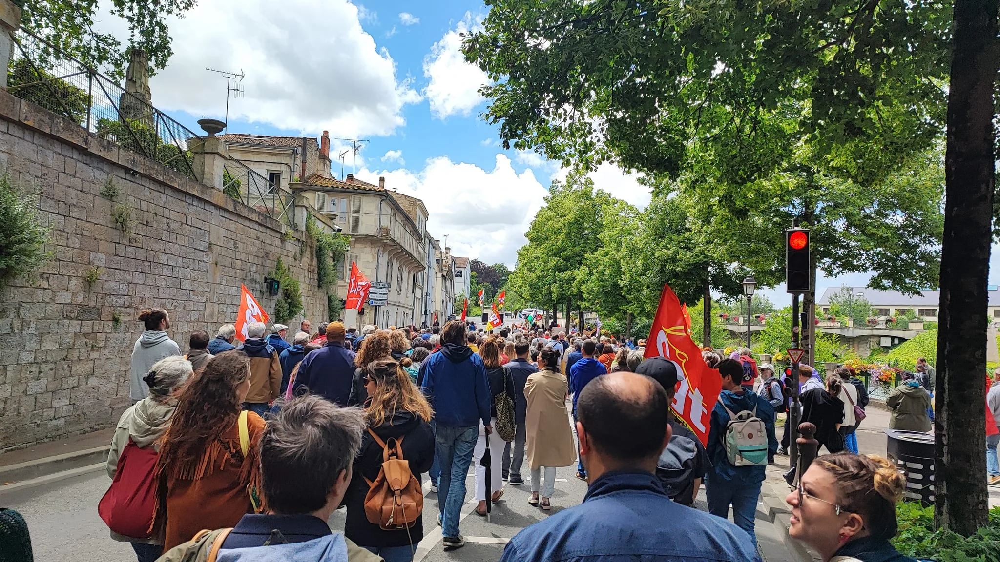

Compte rendu fédéral
Le 15 juin, plus de 1 500 manifestants selon le décompte du PCF 79
Date indiquée par Facebook · 16 juin 2024
Repères éditoriaux
Nous avons répondu à l’appel de l’intersyndicale à Bressuire, Niort et Thouars pour barrer la route à l’extrême droite et rouvrir un chemin de progrès social. Notre compte rendu du 16 juin fait état de plus de 1 500 personnes dans les Deux-Sèvres.
Texte conservé avec la publication
Rassemblements du 15 juin en Deux-Sèvres.
L'appel de l'intersyndicale à se rassembler partout en France contre l'extrême droite a été entendu. Dans les Deux-Sèvres, nous avons été plus de 1500 manifestants. A Bressuire, Niort et Thouars tous ont clamé leur volonté de barrer la route à l'extrême droite qui à l'Assemblée nationale a voté contre les intérêts des salariés.
L'objectif, faire que lors des élections législatives des 30 juin et 7 juillet, le #NouveauFrontPopulaire l'emporte sur le #RN pour défendre les valeurs de la République et réouvrir un chemin de progrès social dans le pays.
#nouveaufrontpopulaire
#PCF






Sources
Archive rouge · export Facebook · AR-0002-FB-01354
À lire aussi · Le 15 juin, rendez-vous à Bressuire, Niort et Thouars